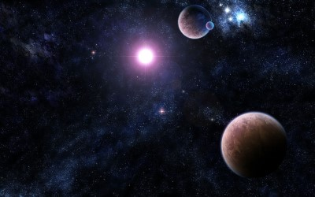
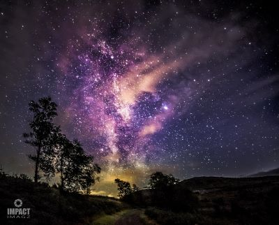

Planets and stars

Our Sun is a star. It’s a vast ball made up of 74% hydrogen and 24% helium, with trace amounts of other elements. It has so much mass that the temperatures and pressures at its core are hot enough to ignite fusion. At the core of the Sun (and other stars), atoms of hydrogen are being fused into atoms of helium. This process releases a tremendous amount of energy. If an object isn’t performing some kind of fusion at its core, it’s not a star.
Most planets are actually made of similar material to the Sun. Both Jupiter and Saturn have similar mixtures of hydrogen and helium. If the planet Jupiter is made of hydrogen, why doesn’t it shine like a star? It all comes down to mass. Jupiter would need to be about 80 times more massive before it had enough mass to actually ignite hydrogen fusion at its core.
The small rocky terrestrial planets like the Earth and Mars make up just a fraction of the mass of the Solar System. Unlike the larger gas giants, the terrestrial planets are mostly made up of denser elements, like iron, silicon and oxygen. The larger gas giant planets probably have large quantities of these heavier elements in their cores. In fact, Jupiter probably has an Earth-like ball of rock with 14 to 18 times the mass of the Earth at its core.
The end of the day, the only real difference between planets and stars is mass – almost everything out there is made up of 75% hydrogen and 24% helium. If an object has about 80 times the mass of Jupiter, it has sufficient mass and temperature to ignite solar fusion in its core. If it doesn’t… it can
Universetoday
Planet Light, planets and stars we see

Stars twinkle because of the massive distance between them and Earth. And we mean massive: our sun's closest stellar neighbors are more than four light-years away. Because of that great distance, we essentially see each star as a single point of light — a shape with almost zero diameter. Once it hits Earth, that starlight is refracted by the various differences of temperature and density as it makes its way through our atmosphere. The refraction is greater than the star's tiny diameter, so it's easy to see — and to us, it looks like twinkling. The scientific term for this is astronomical scintillation.
Our sun and the planets in our solar system are much closer than the rest of the stars in the sky. Earth's atmosphere refracts light from those, too, but since they're a lot closer to us, they show up with a larger diameter than those faraway stars. This makes them look more like tiny disks than pinpoints — something you might not notice with the naked eye but that's easy to see with binoculars or a telescope. The light from one edge of that disk might be forced to "zig" in one direction, but light from the opposite side might "zag" in an opposite direction. Those opposing directions effectively cancel each other out, producing a steady shine that doesn't twinkle like a little star.
Curiosity
At Milky Way
The Milky Way is a barred spiral galaxy with a diameter between 150,000 and 200,000 light-years (ly). It is estimated to contain 100–400 billion stars[26][27] and more than 100 billion planets. The Solar System is located at a radius of 26,490 (± 100) light-years from the Galactic Center[citation needed], on the inner edge of the Orion Arm, one of the spiral-shaped concentrations of gas and dust. The stars in the innermost 10,000 light-years form a bulge and one or more bars that radiate from the bulge. The galactic center is an intense radio source known as Sagittarius A*, assumed to be a supermassive black hole of 4.100 (± 0.034) million solar masses.
Wikipedia